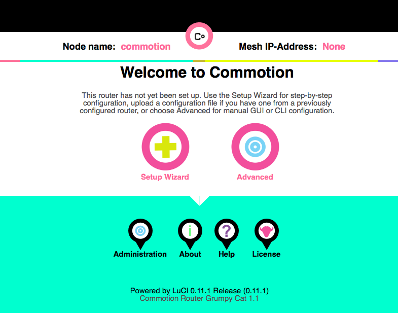
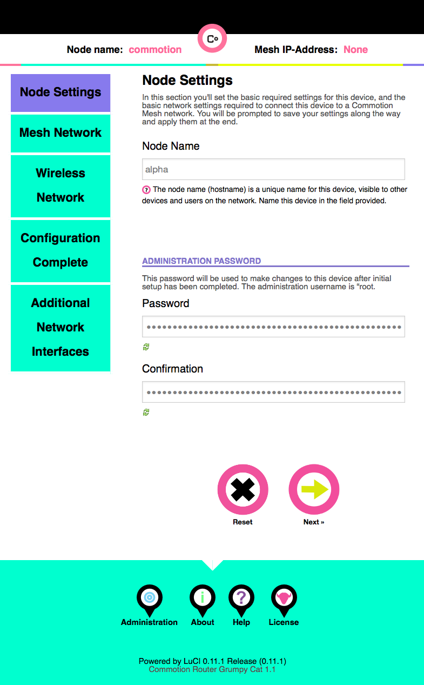
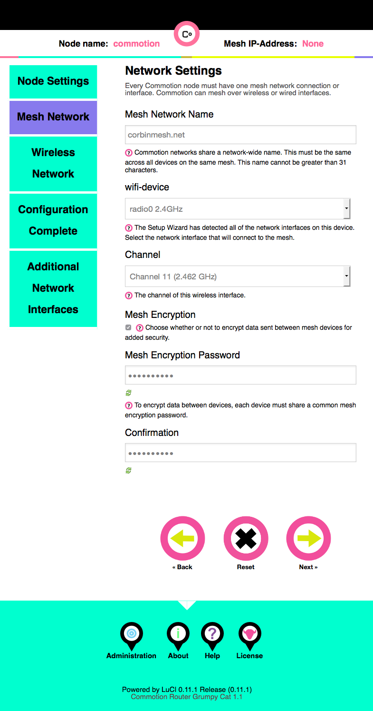
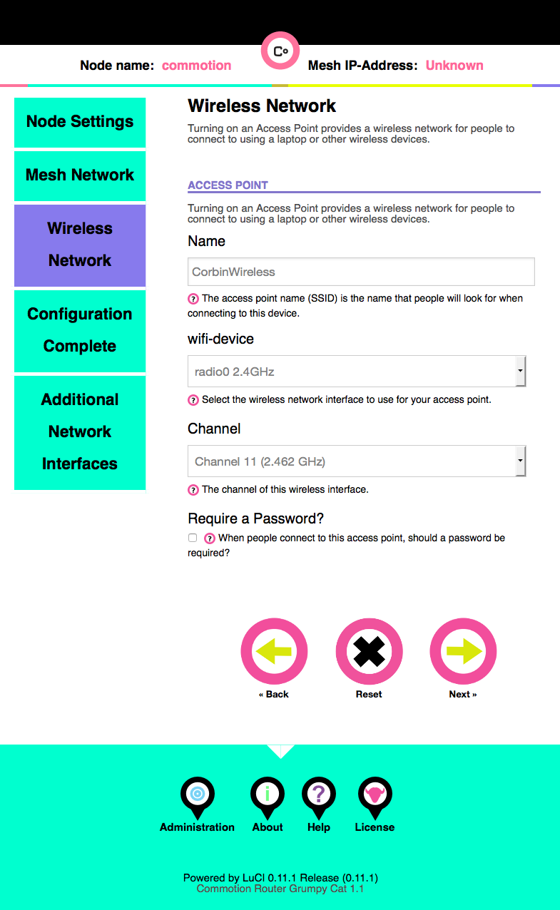
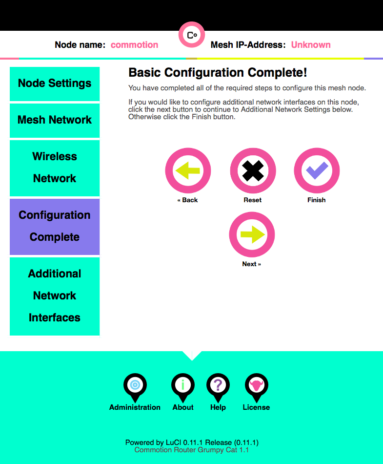
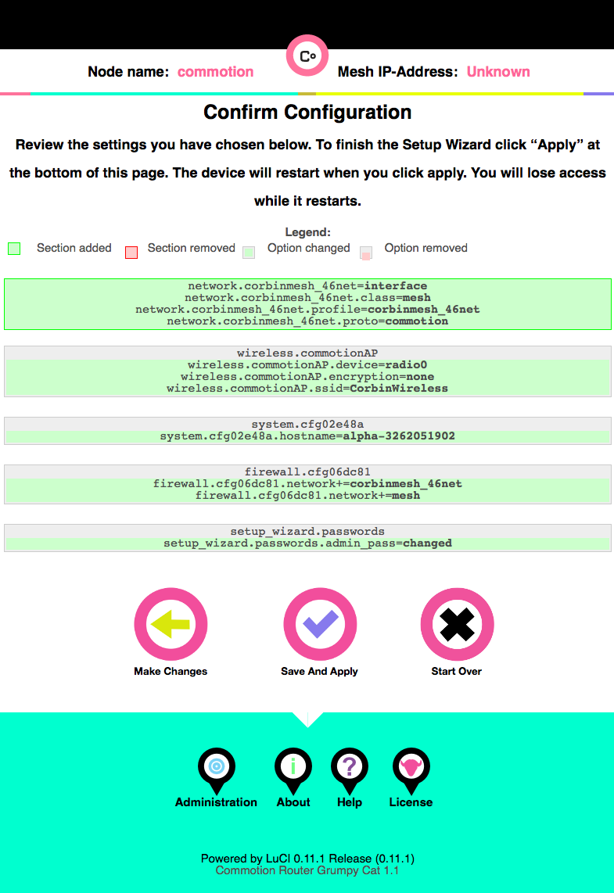

Setup Node
How to setup commotion for CorbinMesh. These screenshots were taken with the WDR4300, but most supported devices should be similar. https://commotionwireless.net/docs/guides-howtos/
https://commotionwireless.net/docs/cck/installing-configuring/configure-commotion/
For some reason if you take too long going through these screen it seems to time out and you’ll have to start again. I suspect it was virtual box changig my network settings. You could try connecting to the AP by it’s IP address rather than it’s name ‘thisnode’
Prepare
- Turn wifi off and disconnect
- Connect an ethernet network cable to a lan port of the ap. These are the yellow ports on the WDR3600 and WDR4300.
- Open a browser and nagivate to http://thisnode, you should see this welcome screen
- Select the “setup wizard” icon

Node Settings
- Node Name
- You can name your node anything you want. Random numbers will automatically be appended later to ensure uniqueness on the mesh (for example “nodename” will become “nodename-3262051902”). Please be aware that this name will be visible by others on the mesh and abide by the code of conduct.
- Administration Password
- Choose a good secure password for the administator account. Follow standard password advice and don’t share this password with others. This will be used for admisitration functions on your node. If you lose it you need to reset and redo your nodes setup to get back into your node.
Your screen should look similar to this:

Network Settings
The password is an “open secret” and is only present to prevent people or devices accidentally connecting to the mesh backend. The mesh backend is only used for point to point mesh trafic and general network access is not possible.
- Mesh Network Name
- corbinmesh.net
- wifi-device
- 2.4GHhz
- Channel
- Channel 11
- Mesh Encription
- Check this box
- Mesh Encription Password
- corbinmesh
Your screen should look similar to this:

Wireless Network
The wireless network is used by endpoint devices to access CorbinMesh.
- Name
- CorbinWireless
- wifi-device
- 2.4Ghz
- Channel
- Channel 11
- Require a Password
- Leave unchecked
Your screen should look similar to this:

Complete

16. hit finish
 17. hit save and apply
17. hit save and apply

Notes
2.4GHz vs 5GHz
We recommend that you use 2.4GHz over 5GHz to connect to CorbinMesh. Our real world testing showed that we could get roughly 4x the distance using 2.4GHz compared to 5GHz. If your creating links inside your house or to your direct neighbors you might benefit from using 5GHz, but the signal drops off after roughly 200m with a clear line of sight.
If you’re mounting a [node] on your roof, don’t spend extra money getting a dual radio model as you probably won’t see any benefit from it, unless you plan to mesh with an indoor node. If you’re doing this, it’s probably worthwhile considering meshing over Ethernet links.